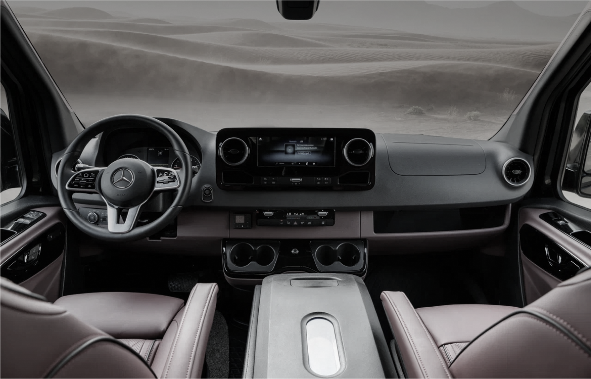

BusMotors - профессиональный сервис по кузовным работам для автобусов. Мы специализируемся на ремонте и восстановлении поврежденных кузовов всех типов автобусов.
Наша команда опытных и квалифицированных мастеров обладает всем необходимым оборудованием и знаниями, чтобы выполнить любые кузовные работы на высоком уровне. Мы проводим ремонт и покраску кузовов, замену и ремонт стекол, а также ремонт и замену других элементов кузова, таких как бамперы, крылья, двери и т.д.
В BusMotors мы понимаем, что автобусы играют важную роль в общественном транспорте, поэтому мы стремимся сохранить и восстановить их внешний вид и функциональность. Мы работаем с автобусами различных марок и моделей, и всегда гарантируем качество и надежность нашего сервиса.
Мы также предлагаем своим клиентам консультацию и помощь в выборе оптимального решения для кузовных работ. Наша цель - удовлетворить все потребности наших клиентов и обеспечить безопасность и надежность автобусов.
Если у вас есть необходимость в кузовных работах для вашего автобуса, обратитесь в BusMotors, и наша команда специалистов с удовольствием поможет вам восстановить внешний вид и функциональность вашего транспортного средства.
